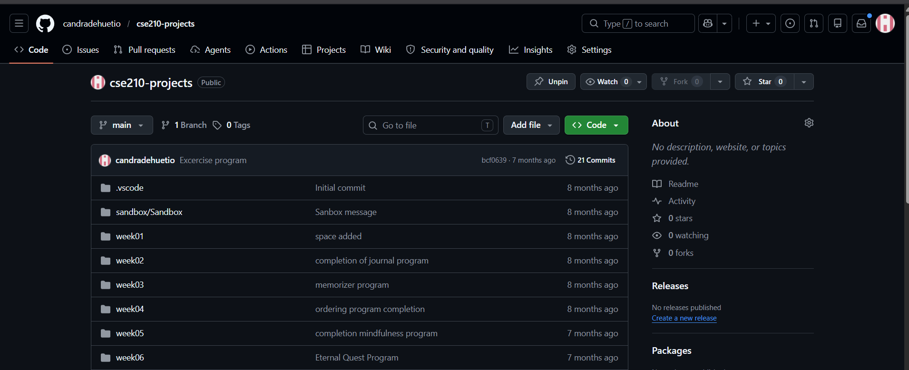

Programando en C# Diferentes Tareas Cotidianas
Desarrollo de apliaciones basicas para el hogar y uso diario como un gestor de tareas cotidianas mediante lectura de ficheros y diseño mediante diagramas de clases para planificar y ordenar la programacion orientada a objetos.